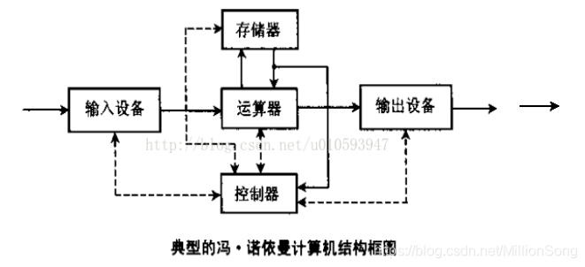
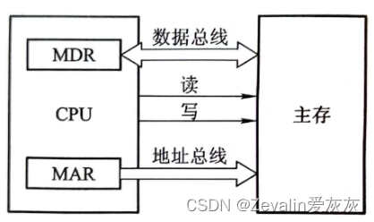
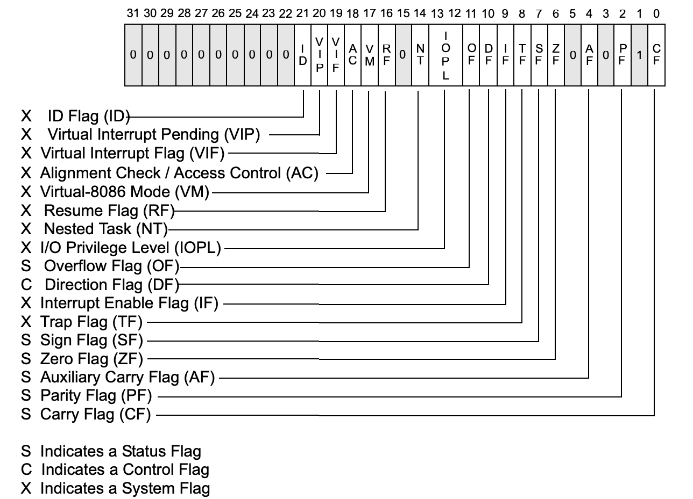
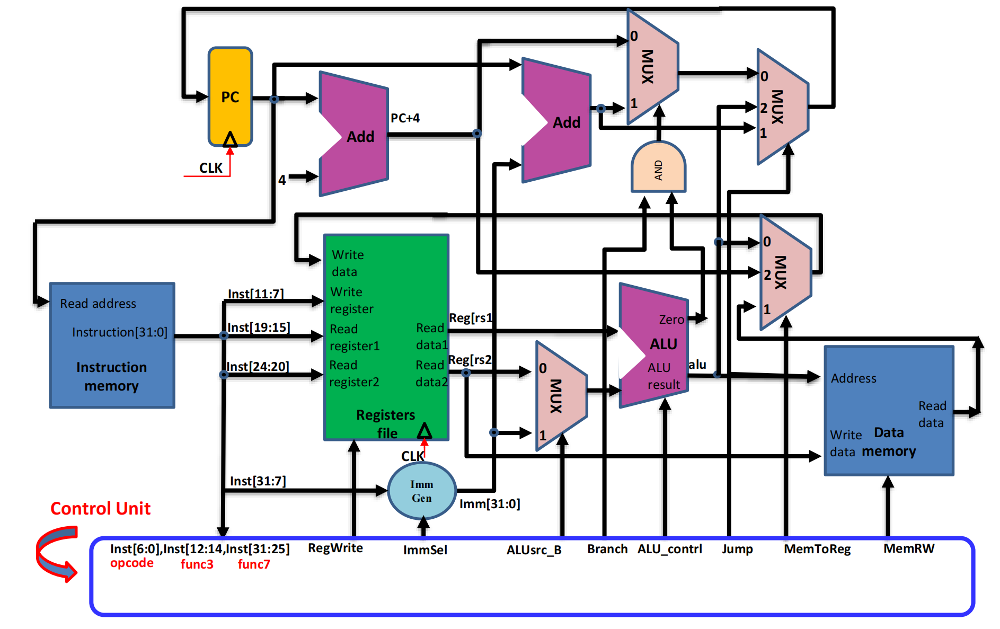
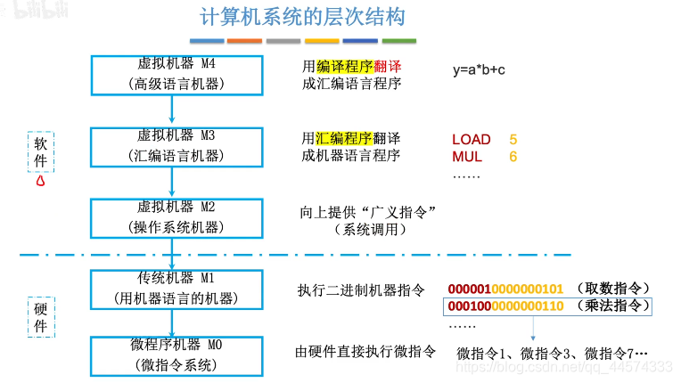
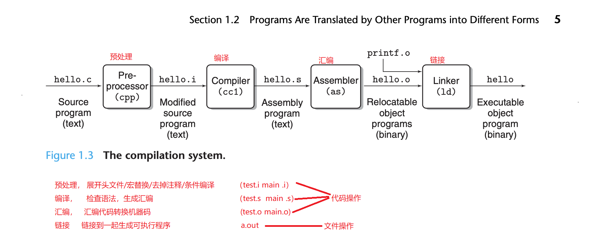

王道计组考研复习笔记
怕学完忘了写个笔记保留一下顺便加深印象 x
王道书写得好烂、、
# Ch1 计算机系统概述
# 1.1 计算机发展历程
- 四代计算机：电子管 -> 晶体管 -> 集成电路 -> 超大规模集成电路
- 摩尔定律：集成电路上可以容纳的晶体管数目在大约每经过 18 个月到 24 个月便会增加一倍
# 1.2 计算机系统层次结构
- 计算机系统：硬件 + 软件
- 对于某一功能，既能用软件实现又能用硬件实现，称为软、硬件在逻辑功能上是等价的
# 1.2.2 硬件
- 冯・诺依曼机的特点：
- 采用 “存储程序” 的工作方式
- 冯・诺依曼计算机由五大部件组成：运算器、控制器、存储器、输入设备和输出设备
- 指令和数据以同等地位存储在存储器中
- 指令和数据均用二进制代码表示
- 指令由操作码和地址码组成
- 
- 计算机的功能部件：
- 输入设备
- 输出设备
- 存储器：主存 + 外存
- CPU 能直接访问的是主存
- 
- MAR 位 10 位则最多有 个存储单元
- 在现代计算机中 MAR 和 MDR 存在 CPU 中
- 运算器：进行算术运算和逻辑运算
- 核心是 ALU：通用寄存器有累加器 (ACC)，乘商寄存器 (MQ)，操作数寄存器 (X)，变址寄存器 (IX)，基址寄存器 (BR) 等，前三个必备
- 程序状态寄存器 (PSW)
- 
- 控制器：由 PC, IR 和 control unit 组成
- : RISCV 控制器
- 
- CPU 由运算器、控制器和 cache 组成
- 总线有地址总线、数据总线、控制总线
# 1.2.3 软件
- 组成：系统软件 (OS, DBMS, 编译器，…)+ 应用软件
- 语言：汇编语言、机器语言、高级语言
- 汇编器：把汇编语言翻译成机器语言
- 编译器：把高级语言翻译成汇编语言或机器语言
- 解释器：把高级语言翻译成机器语言 (比如 python)
example
🌰
将高级语言源程序转换为机器级目标代码文件的程序是 []。
A. 汇编程序
B. 链接程序
C. 编译程序
D. 解释程序C. 编译程序
因为解释程序不生成目标代码，编译器可以把高级语言翻译成汇编语言或者直接翻译成机器语言
# 1.2.4 计算机系统的层次结构
- 看看就好
- 
# 1.2.5 计算机系统的工作原理
- 程序执行前，需要把所含的指令和数据一起放入主存中
- 五个阶段：IF-ID-EX-MEM-WB
- c 程序怎么变成可执行文件的：直接看图
- 
- 汇编器把指令打包成可重定位目标代码文件：使用相对地址和符号引用来表示各个代码段之间的关系（代码段、数据段、符号表、重定位表…）使得代码或数据能在内存中任意位置加载或运行
- 指令执行过程：后面几章会具体讲
# 1.3 计算机的性能指标
# 1.3.1 主要性能指标
- 字长：一次整数运算所能处理的二进制数据的位数
机器字长、指令字长和存储字长
- 带宽
bandwidth：总线一次能并行传送信息的位数 - 主存容量
- 运算速度
- 吞吐量
throughput：一次输入数据所对应的输出数据个数 - 响应时间
Response (Execution) time - 主频
- clock cycle time( = 1/CPU frequency)
- MIPS: million instructions per second
- FLOPS: floating-point operations per second
CPI: clock cycles per instruction (IPC: CPI 的倒数)
- 吞吐量
“Processor X is n times fast than Y” is
IPS: instructions per second
- 其他公式，，，用到再说吧
- 兼容：软件或硬件的通用性
在用于科学计算的计算机中，标志系统性能最有用的参数是浮点数运算相关的
- MFLOPS 10^6
- GFLOPS 10^9
- TFLOPS 10^12
- PFLOPS 10^15
- EFLOPS 10^18
- ZFLOPS 10^21